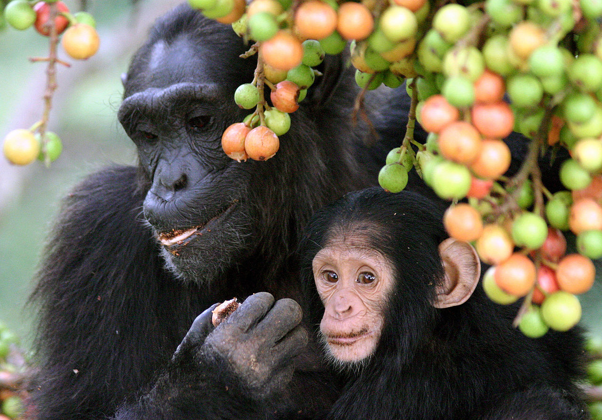

The chimpanzee, also known as simply the chimp, is a species of great ape native to the forest and savannah of tropical Africa.
It has four confirmed subspecies and a fifth proposed subspecies. When its close relative the bonobo was more commonly known as
the pygmy chimpanzee, this species was often called the common chimpanzee or the robust chimpanzee. The chimpanzee and the bonobo
are the only species in the genus Pan. Evidence from fossils and DNA sequencing shows that Pan is a sister taxon to the human
lineage and is humans' closest living relative. The chimpanzee is covered in coarse black hair, but has a bare face, fingers,
toes, palms of the hands, and soles of the feet. It is larger and more robust than the bonobo, weighing 40-70 kg (88-154 lb) for
males and 27-50 kg (60-110 lb) for females and standing 120 to 150 cm (3 ft 11 in to 4 ft 11 in).

The chimpanzee lives in groups that range in size from 15 to 150 members, although individuals travel and forage in much smaller
groups during the day. The species lives in a strict male-dominated hierarchy, where disputes are generally settled without the
need for violence. Nearly all chimpanzee populations have been recorded using tools, modifying sticks, rocks, grass and leaves
and using them for hunting and acquiring honey, termites, ants, nuts and water. The species has also been found creating sharpened
sticks to spear small mammals. Its gestation period is eight months. The infant is weaned at about three years old but usually
maintains a close relationship with its mother for several years more.